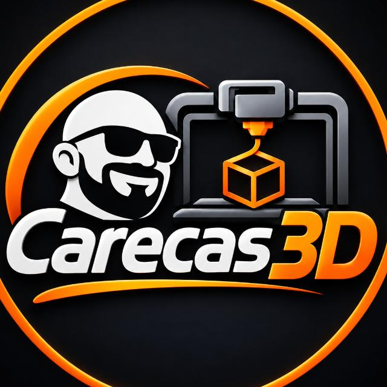

Peças sob medida
Componentes, suportes, encaixes e reposições personalizados para sua aplicação.

CARECAS3DIDEIAS QUE GANHAM FORMA
Impressão 3D sob medida para projetos, protótipos, peças funcionais e produtos personalizados.
O QUE FAZEMOS
Do primeiro conceito à peça pronta: desenvolvemos soluções de acordo com a necessidade de cada projeto.
Componentes, suportes, encaixes e reposições personalizados para sua aplicação.
Transforme conceitos e desenhos em protótipos físicos para testar forma e funcionalidade.
Objetos decorativos, organizadores, brindes e projetos exclusivos.
PORTFÓLIO
Alguns exemplos de aplicações. Esta galeria pode ser atualizada com fotos reais dos seus trabalhos pelo painel administrativo.
Componentes desenvolvidos para necessidades específicas.
Modelos para validar ideias e projetos.
Peças criadas para combinar com seu projeto.
MATERIAIS
A escolha do filamento depende do uso, resistência, flexibilidade, acabamento e ambiente de trabalho da peça.
Consulte as opções disponíveis →CARECAS 3D
Somos uma iniciativa dedicada à fabricação digital e à impressão 3D. Nosso foco é aproximar pessoas e projetos das possibilidades dessa tecnologia, com atendimento direto e soluções personalizadas.
VAMOS COMEÇAR?
Envie uma foto, desenho ou descrição da peça. Vamos conversar sobre a melhor forma de produzir.
Entre em contato pelo WhatsApp para explicar o que precisa.
Conversar pelo WhatsApp ↗Você pode enviar imagens, medidas e arquivos do projeto.